CRC-PHIRE｜Sendi试跑：方法、主要结果及对正式研究的参考
本文汇总Sendi截至2026-10-08完成的试跑：258份细菌参考genome＋Feng队列10名供者（5例CRC、5名研究对照），以及随后开展的宿主、测量规则和复制活动诊断。这里展示的是已完成结果；正式项目将覆盖9个队列，即7个开发队列＋2个独立验证队列。
阅读时先看第1节的总体收获，再按兴趣查看结果和图。第8节集中说明这些结果怎样帮助正式研究；具体阈值、统计公式和完整图注放在图注与测量统计方法，查找代码和底表的方法放在第9节。
1. Sendi这次试跑得到了什么
这次试跑贯通了“细菌参考与患者数据共同发现 → 序列连接 → 统一测量 → 功能解释 → 探索性比较”，并找到了可以继续追踪的复制活动候选。 它同时指出了正式研究最需要处理的几个问题：参考覆盖有限、病毒之间存在共享序列、部分宿主分类难以分辨，以及小样本中多数病毒检出很稀疏。
| 试跑回答的问题 | 已得到的结果 | 对项目的实际价值 |
|---|---|---|
| 两类数据能否各自找到prophage候选？ | 参考端541个、患者端382个预测provirus位点 | 两条发现路径都有实际产出，可继续建立统一资源 |
| 参考和患者序列能否连接起来？ | 20条广泛匹配，连接19条参考病毒序列与7条患者病毒序列 | 已有可追溯的G—M连接，能继续寻找宿主结构和培养参考 |
| 能否测量并比较CRC与对照？ | 建立473个vOTU的统一定量目录，完成815项有效探索性检验 | 比较流程已完成；本批结果为正式统计设计提供信息量参考 |
| 能否把功能落到具体病毒序列？ | 完成PHROGs、defense、anti-defense及KO同源的序列—基因连接 | 可从候选病毒追溯到具体基因、系统和位置，再做功能复核 |
| 能否分析prophage相对复制活动？ | 382个位点可评价，2个位点显示与活跃复制相容的覆盖特征 | 获得有坐标、覆盖曲线和敏感性结果的后续研究对象 |
| 哪些测量问题会影响正式结论？ | 识别了共享序列歧义、覆盖阈值敏感性和宿主分类缺口 | 正式研究可以提前明确测量分辨率、缺失处理和宿主对应规则 |
本次5＋5比较中，部分对象达到原始P<0.05，但全部有效检验的全局FDR校正均未达到显著。其科学含义是：本批数据提供了可继续检验的信号和方法依据，CRC关联是否稳定需要正式多队列结果回答。 复制活动候选的切出、颗粒形成及生物学功能，则可在后续选定对象后通过实验进一步支持。
2. 为什么这样试跑，使用了哪些数据
试跑的目的，是检查两端数据是否能连接、下游是否能得到可解释结果，并据此完善正式研究。已有结果不作为正式项目必须重复得到的数量目标。Jinlong可使用自己的pipeline和成熟参数，是否复用现有输入、代码或结果由其判断；无需另设一次pilot。
2.1 参考端：提供已知细菌背景中的病毒序列
Sendi本次选择258份细菌genome开展试跑，具体编号和文件校验见试跑参考清单。
| 参考分类标签 | genome数量 |
|---|---|
| B. fragilis division I | 123 |
| B. hominis／历史division II | 19 |
| F. animalis | 93 |
| P. micra | 23 |
| 合计 | 258 |
这258份参考用于发现细菌基因组中的病毒位点、保存宿主背景并与患者序列比较。本次没有把它们作为“CRC来源菌株与非CRC来源菌株”进行疾病统计比较；其中196份临床来源标签为unknown。公开分离株序列也不等于实验室已经持有对应实物菌株。
2.2 患者端：Feng队列5例CRC＋5名研究对照
| 分组 | 供者编号 |
|---|---|
| CRC | SID31866、SID530373、SID531248、SID531361、SID531469 |
| 研究对照 | SID31160、SID31512、SID530295、SID530368、SID532796 |
对照沿用原研究定义，可包含共病。两组各4女1男；年龄、共病等因素没有完成匹配，本次也未拟合宿主丰度调整模型。
十人对应40个readsets、50个clean FASTQ，最终以供者为测量和疾病比较单位。补入的四名对照在本轮病毒结果产生前已固定；十人共同建立联合目录，并全部向同一目录定量。因此，结果是统一的十人分析，而非两批不同目录的结果拼接。
3. 实际做了哪些步骤
258份参考genome → 病毒/prophage预测 → 参考端实例 G
↘
10人原始reads → 质控、去人源 → 逐人组装 → 患者端实例 M
↓
G与M序列匹配＋建立统一vOTU目录
↓
十人统一定量＋prophage/宿主证据整理
↓
功能连接＋CRC/对照探索性比较
↓
宿主profile＋共享序列/阈值诊断＋原位点复制活动| 步骤 | 这一步要解决什么 | 试跑采用的方法 |
|---|---|---|
| reads处理与组装 | 获得可用于病毒发现的患者contig，并保留原始上下文 | fastp；Bowtie2去人源；MEGAHIT组装；QUAST；组装reads回贴 |
| 病毒及prophage识别 | 找到候选序列、整合区段与质量证据 | geNomad、CheckV；保存原contig、区段、坐标和侧翼 |
| 目录与两端匹配 | 区分哪些序列属于同一聚类、哪些参考和患者序列足够相似 | vOTU聚类采用95% ANI、85%较短序列覆盖；广泛G—M匹配另要求双方覆盖均≥85% |
| 患者统一定量 | 在相同参考和规则下比较十人 | Bowtie2竞争比对；reads identity≥95%、query比对范围≥90%、MAPQ≥20、baseQ≥20 |
| 检出判定 | 定义一个病毒在某人中何时算达到广泛检出 | 病毒全长至少75%的位置达到≥1×覆盖；PE重叠不重复计数，同供者合并覆盖 |
| 功能解释 | 把功能落实到实际病毒序列及基因位置 | PHROGs、DefenseFinder体系、KOfam/KO；保留基因和系统连接 |
| 探索性比较 | 评价CRC与对照中的检出和丰度差异 | 双侧Fisher、精确秩置换、效应量及全局BH校正 |
| 后续诊断 | 解释宿主、测量歧义及复制活动 | MetaPhlAn宿主profile；共享片段审计和技术模拟；PropagAtE及覆盖敏感性分析 |
这些是Sendi试跑实际采用的方法。完整软件和数据库版本、过滤条件、命令与逐人运行记录见方法附录及源码与配置说明。正式项目的实际选择记录在Jinlong方法与参数决策表。
4. 发现结果：两端都找到候选，也建立了序列连接
4.1 先区分三种数量
“实例”指某个参考genome或某名患者组装中的一个位点；相同序列可以出现在多个实例中。“去重序列”按序列内容计数。“vOTU”则是按既定相似度规则形成的病毒序列聚类。
| 统计对象 | 参考端 | 患者端 | 合计／后续目录 |
|---|---|---|---|
| 原始病毒候选实例 | 812 | 10,683 | 11,495个实例 |
| 其中预测provirus位点 | 541 | 382 | 923个位点 |
| 原始实例对应的去重序列 | — | — | 11,472条 |
| 通过本次目录规则的定量vOTU | — | — | 473个 |
provirus在这里表示计算识别的前噬菌体整合区段。473个vOTU是本次合格病毒定量目录的规模，成员的prophage证据强弱需要逐项查看；这些数字分别描述发现、去重和定量层级。
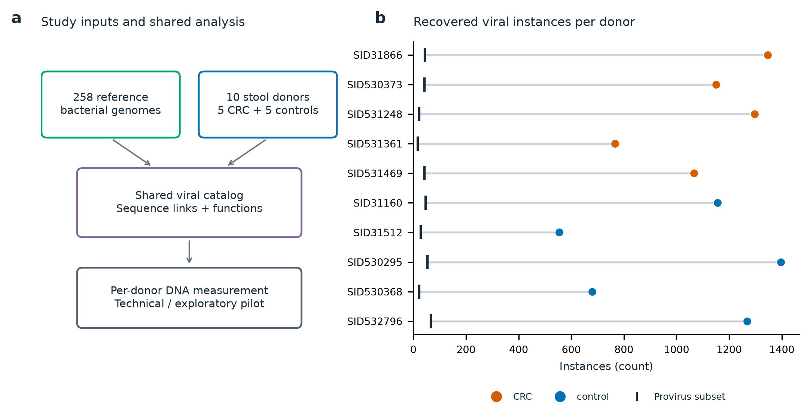
图中看什么：每名供者产生多少病毒实例，其中多少被预测为provirus。发现数量受到测序深度与组装能力影响，本图用来了解数据产出。
4.2 参考与患者之间，取到了什么交集
直接匹配共有1,051条序列对。其中20条达到双方覆盖要求，连接19条参考病毒序列与7条患者病毒序列；另外1,031条属于局部／片段匹配。展开到参考菌株和患者实例后，有1,066行多对多来源连接，用于追溯相同序列可能对应哪些参考与样本。
收获是已经取得可追溯的序列连接。 后续可以沿着这些连接检查患者整合上下文、参考菌株中的位置及培养资源。20条是匹配关系数，不是20种病毒或20个疾病关联；参考端的菌名还需要结合患者自己的上下文来解释宿主。
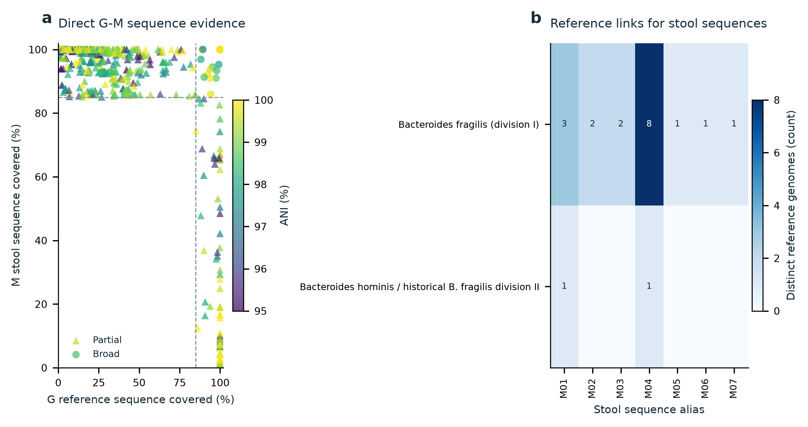
图中看什么：哪些患者病毒序列与参考端相连、对应哪些参考背景，以及匹配属于广泛覆盖还是局部片段。
4.3 怎样把prophage证据说清楚
本次已将caller预测、边界、CheckV质量、宿主侧翼marker、跨界reads和局部结构分别记录。这样可以区分“找到病毒序列”“具有整合上下文”“能连接到参考宿主”等证据，而不把所有对象放在同一可信度层级。
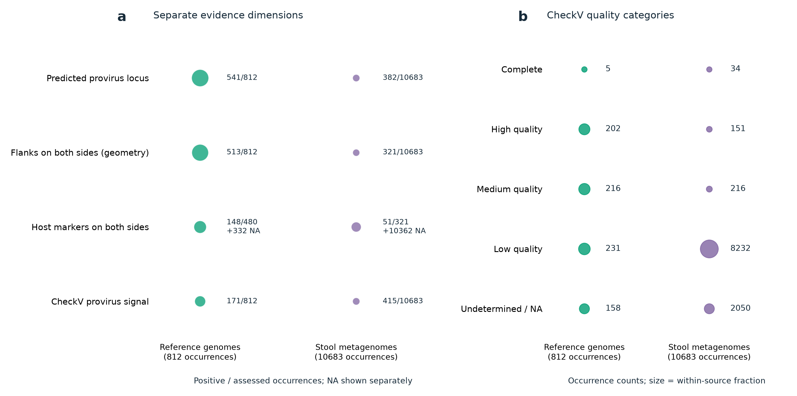
图中看什么：候选的质量和整合支持处于哪个层级。正式研究可据此建立主要分析集合和补充集合；选定关键对象后，再用实验支持其整合、切出及活动状态。
5. 功能结果：已经能从病毒追溯到基因和系统
PHROGs、防御／反防御系统及KO同源结果已连接到具体序列与基因。交集功能表中的记录如下。
| 功能证据 | 证据行数 | 目前能用于什么 |
|---|---|---|
| PHROG同源 | 585 | 了解病毒基因的同源家族与功能背景 |
| anti-defense | 6 | 定位候选反防御系统／组件及其成员基因 |
| defense | 1 | 定位候选防御系统／组件及其基因位置 |
| KO同源 | 55 | 提供代谢功能线索，供后续AMG/cargo上下文复核 |
这里的单位是证据行，不同类别的记录结构不同，不能直接比较其丰度。实际价值在于：现在可以从一条候选病毒出发，找到它自身的功能基因及位置，再判断系统是否完整、是否位于病毒边界内、是否可能来自细菌侧翼。
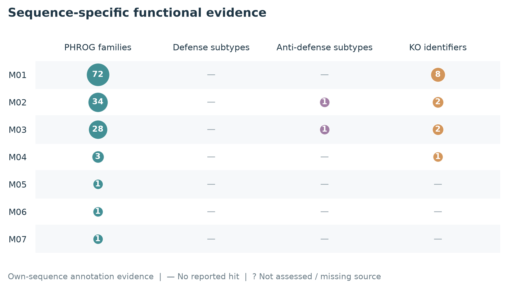
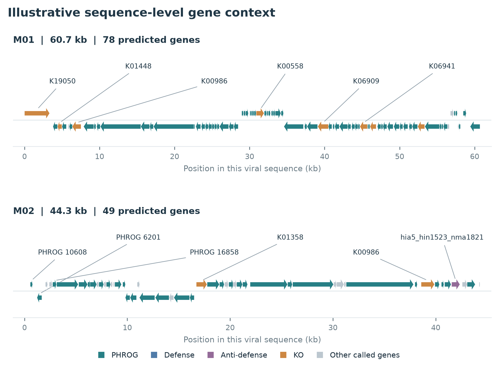
图中看什么：前一张图展示哪些序列带有功能命中，后一张图把命中放回基因排列和位置中。后续可结合跨队列候选和边界证据优先筛选功能对象，并通过关键实验支持具体功能。人群层面的功能携带／丰度差异仍由正式研究完成。
6. 患者比较与测量诊断：有哪些信号，哪些问题值得提前处理
6.1 5＋5的疾病比较结果
| 比较内容 | 有效检验数 | 原始P<0.05 | 全局FDR显著结果 |
|---|---|---|---|
| 检出比例 | 342 | 1 | 0 |
| 连续丰度 | 473 | 19 | 0 |
| 合计 | 815 | 20项检验，涉及19个不同vOTU | 0 |
815项有效P共同进行BH校正，全部有效全局Q为1。另有131项检出比较因有效信息不足标为NA。效应方向、中位数差、Cliff’s delta以及所有P／Q都保存在完整差异结果表。
这批结果的参考价值是展示了信号分布和信息量：161个vOTU无人达到广泛检出，236个仅在一人检出，共397/473（约83.9%）。正式研究需要更多独立供者和跨队列重复，才能更稳定地估计这些对象的疾病关联。扩量能改善估计与检验条件，最终效应及显著对象数量仍由数据决定。
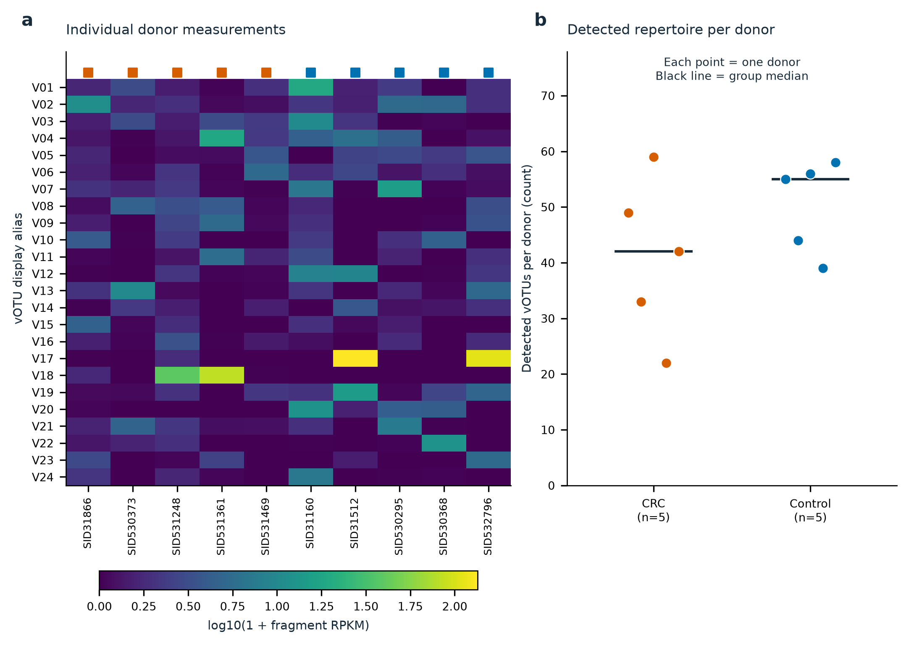
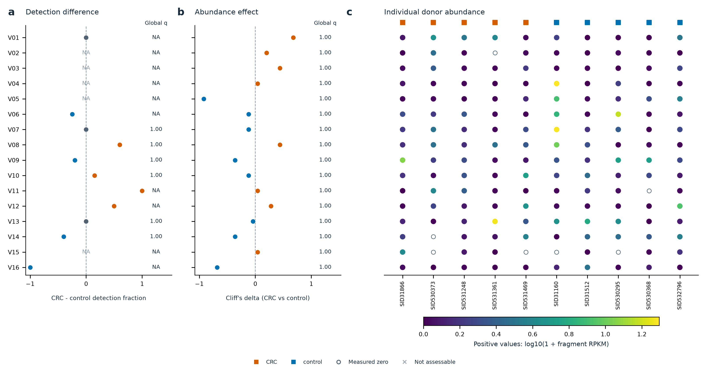
图中看什么：前一张图显示哪些信号分布在多少人中；后一张图结合效应与统计结果展示CRC／对照比较。描述性图不额外添加显著性星号，具体检验以完整底表为准。
6.2 宿主背景能帮助解释病毒检出
| 宿主标签 | CRC中有profile信号 | 对照中有profile信号 |
|---|---|---|
| B. fragilis | 3/5 | 3/5 |
| F. animalis | 1/5 | 0/5 |
| P. micra | 4/5 | 0/5 |
| F. prausnitzii | 5/5 | 5/5 |
| R. intestinalis | 4/5 | 5/5 |
| B. hominis | NA：数据库精确标签缺口 | NA：数据库精确标签缺口 |
这些是固定profile方法下的描述性结果。B. fragilis物种标签对division I／II的辨别能力也未单独验证，正式分析应核对参考分类与宿主数据库标签的对应层级。
一个有帮助的例子是P. micra：4名CRC供者有宿主profile信号，但4个参考相关vOTU均未达到广泛检出，同时8个供者×vOTU单元存在歧义片段。它提醒我们，宿主是否被检出、患者是否携带特定参考病毒、reads能否归属于该病毒，是三个需要分别回答的问题。
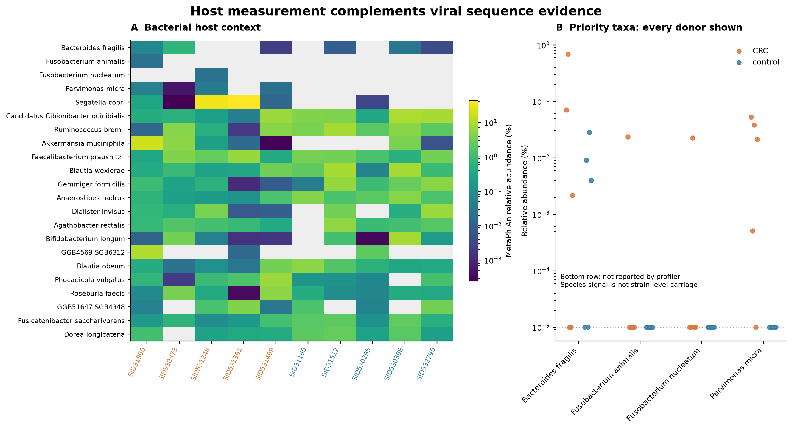
正式研究可参考什么：同时测量宿主，先解决分类对应和可测范围，再在同一合格供者子集中比较调整前后的病毒效应。本次已完成宿主profile和诊断，宿主调整模型留待正式研究。
6.3 共享序列和检出规则会影响测量结果
涉及病毒的歧义片段中，病毒—病毒共享为254,062，病毒—宿主背景共享为44,038，另有932个同目标多位置／搜索饱和片段。因此，处理病毒之间的共享区域是本项目的重要测量问题。另有1,851,498个host-only片段，它们描述宿主背景，不能全部解释成丢失的病毒信号。
保持其他规则不变，将广泛覆盖门槛75%与部分覆盖门槛30%比较：达到相应检出的供者×vOTU单元从457增加到695。增加的238个是“某人—某病毒”的测量单元；是否在全长和特异区域均有支持，还要结合覆盖图判断。
11个目标的有限技术模拟中，75%规则检出SE的5/11、PE的6/11，30%时两种布局均为11/11；所测困难阴性背景未产生目标的错误归属覆盖。这个结果给出了敏感性与保守归属之间的实测参考，其适用范围是所测试的目标和条件。
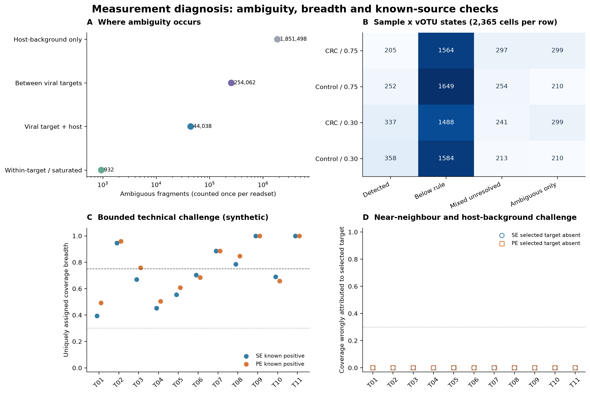
正式研究可参考什么：保留广泛检出、部分覆盖和无法区分等状态，明确覆盖分母与共享reads处理。Jinlong根据成熟方法选择正式阈值，并在查看正式疾病效应前记录；75%和30%是本次经验，均不需要机械照搬。
7. 复制活动结果：已经有具体对象可继续追踪
本次从患者组装中识别的382个provirus位点均达到所设覆盖可评价条件，其中153个位点进入原合格定量目录（139个代表、14个成员）。这说明原组装回贴BAM可以支持这一支线；可评价比例受组装和覆盖选择影响，不能外推到患者体内全部prophage。
2个位点表现出与活跃复制相容的覆盖特征，均来自研究对照。
| 对象 | 主要结果 | 后续研究价值 |
|---|---|---|
| SID532796，约70.486 kb | 病毒均深64.66×、宿主20.72×；主覆盖比3.121，严格比对3.114，局部分母2.896；有双侧宿主marker，已进入定量目录 | 优先追踪结构、宿主及跨样本重复，寻找合适培养参考，进一步验证活动 |
| SID31160，约3.709 kb | 主覆盖比约3.193，严格比对和局部分母结果相近；未进入合格定量目录，无双侧宿主marker | 作为短候选继续核查病毒身份与边界，再决定后续投入 |
第一个对象的实例编号为occ_6490c24bbc8d472e47dbd3aa62bd61f3，对应votu_460353d4d5133754bc17。完整数值和第二个对象编号见复制活动候选表。
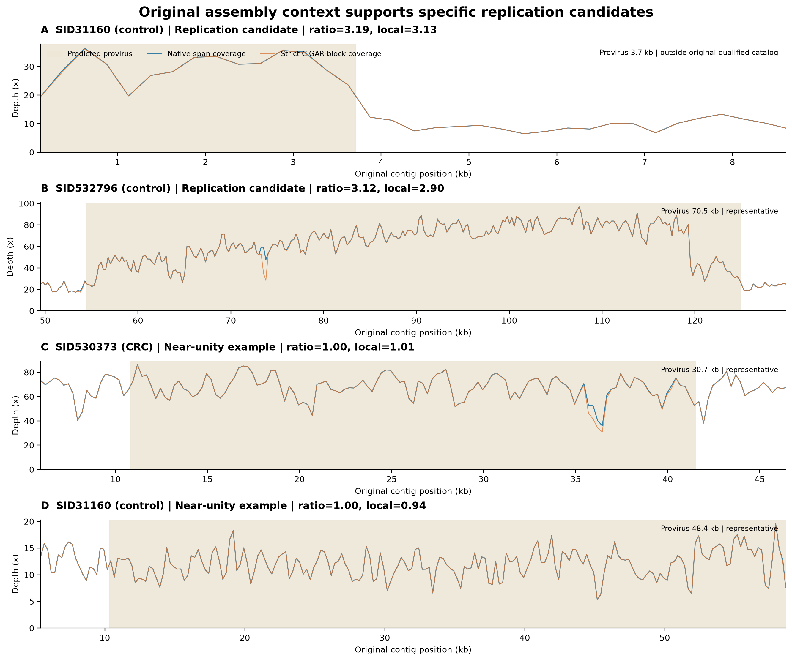
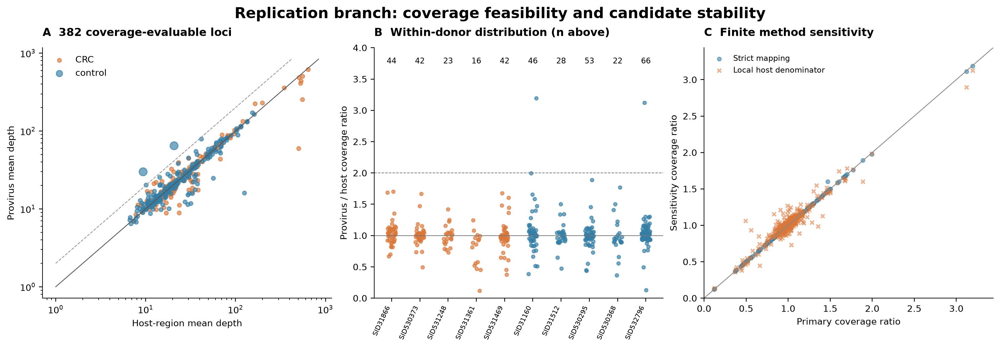
图中看什么：病毒区域与相邻宿主区域的覆盖是否有差别，以及改变比对条件和宿主分母后结果是否稳定。另380个位点在本次采样中未达到覆盖升高判定；其其他条件下的诱导潜力可另行研究。
这些结果提供了可操作的后续对象。正式研究可检验其在人群中的分布和关联，实验则可进一步支持切出／环化、胞外DNA或颗粒形成及相关表型。两条均来自对照，因此选候选时应同时考虑富集、耗竭和具有生物学价值但疾病方向尚不明确的对象。
8. 对正式研究的参考：哪些应保留，哪些需要改进，下一步要得到什么
8.1 保留研究主线，按结果补足设计
| Sendi试跑提供的依据 | 正式研究建议 | 正式阶段应交付什么 |
|---|---|---|
| 参考端和患者端都产生候选，并已有广泛序列连接 | 保留患者开放发现与细菌参考支撑；同时保留G—M共有、患者独有和参考独有对象 | 统一目录、成员及来源表；患者自身的宿主／整合证据 |
| 现有参考只覆盖四个分析标签，广泛匹配连接到7条患者序列 | 按文献、宿主方向和谱系缺口系统扩充参考，不按十人中是否阳性来挑菌 | 经统一QC与分类核查的正式accession版本、数量、来源和排除记录 |
| 大多数vOTU检出稀疏，5＋5的全局校正没有显著结果 | 按预定标准纳入正式9队列，先固定可测信息过滤、统计家族和模型；7队列开发、2队列独立验证 | 效应、区间、P／Q、可测人数及跨队列重复性，而非预设显著对象数量 |
| 病毒间共享序列是主要歧义来源，覆盖阈值影响检出 | 明确竞争比对、共享reads归属、覆盖分母及NA处理；主检出与部分信号分别报告 | 能解释的供者×病毒矩阵、歧义状态、测量规则及必要敏感性结果 |
| 宿主profile既有可用信号，也有分类标签缺口 | 固定宿主数据库和分类对应；先判定宿主可测性，再比较同一子集的调整前后结果 | 宿主profile、分类交叉表、调整模型与适用范围 |
| 功能已经连接到实际序列，但系统完整性、边界和代谢背景仍需复核 | 对正式候选开展自身序列的PHROGs、defense／anti-defense和AMG/cargo审阅 | 基因坐标、完整系统／组件状态及功能证据；不强求每类功能各有独立显著结论 |
| 382个位点可开展覆盖分析，已有2个复制活动候选 | 保留结构合格子集的复制活动支线，并优先复用原组装回贴BAM | 位点资格、覆盖曲线、宿主分母和稳定性；与疾病关联分别报告 |
| 已能从候选追溯到序列、坐标、功能、覆盖和代码 | 从正式可重复结果中筛选1–2个宿主—prophage对象 | 参考菌株可获得性、结构与功能证据包、少量关键实验方案 |
这里需要区分已有事实与设计建议：试跑已经给出真实序列连接和活动候选；扩充参考、扩大患者规模和增加独立验证，是根据现有覆盖与信息缺口作出的设计选择。新数据具体增加多少匹配、出现何种效应，需要正式结果确定。
8.2 Jinlong接下来怎样使用这些经验
- 并行准备两类正式输入。 参考端按当前候选清单下载、做序列QC和分类／身份核查；患者端核对9队列的临床身份，纳入全部合格样本并完成上游。试跑对象不限制正式物种或患者范围。
- 在对应分析开始前明确实际方法。 按自己的pipeline决定工具和参数，重点记录目录质量、聚类、检出广度、共享reads、宿主分类、统计家族与复制分母。有关问题已整理到方法与参数决策表。
- 联合分析前完成两个冻结。 先锁定正式细菌参考的accession版本、QC和数量，再锁定参考G＋开发患者M的联合病毒目录及成员关系。2个验证队列保留独立验证角色。
- 依次获得可解释的人群结果与候选。 统一定量、跨开发队列分析、宿主及功能解释、合格位点复制活动，随后验证固定候选，再选择1–2个适合实验的对象。
已有清单、图表、底表、代码和方法经验均可参考；是否复用计算由Jinlong决定。正式结果以实际输入和方法为准，无需追求重现541、382、473或2等试跑数量，也无需先完成另一轮pilot才能推进。
9. 如何从报告找到底表、代码和参数
| 想核对什么 | 从哪里进入 |
|---|---|
| 本文的主要数量 | 复核指标；对应科学底表见下列入口 |
| 参考与患者的序列连接 | G—M直接匹配表 |
| 每个实例的序列、坐标和prophage证据 | 实例证据表 |
| 每个vOTU的疾病比较及具体测量值 | 完整差异表、逐供者统计输入 |
| 图的展示选择、零值／NA和精确统计方法 | 图注与测量统计方法 |
| 实际输入、命令、工具／库版本和配置 | 方法源码与运行记录 |
| 正式项目下一步 | 全局研究计划、Jinlong执行说明 |
例如追踪occ_6490c24bbc8d472e47dbd3aa62bd61f3：先在位点表查覆盖和vOTU，再到实例证据表查原contig、坐标及序列／侧翼哈希；覆盖窗口底表和绘图代码用于还原曲线。该实例的最终宿主物种需继续依据宿主证据确定。
11张图的原图、独特图源数据及代码均保留；九份相同图源副本通过source_data_index.tsv连接到底表。三个历史源码版本可按源码说明恢复。独立重画示例可直接读取交付底表生成候选图。
DefenseFinder部分原始hmmer_results临时输出已清理，现存基因、系统、配置及运行证据可供查阅；需要对应原始HMM细节时按记录重跑。公开代码中的内部路径已替换为逻辑路径，运行时按实际服务器配置。本次文档整理不改变已有科学数据。